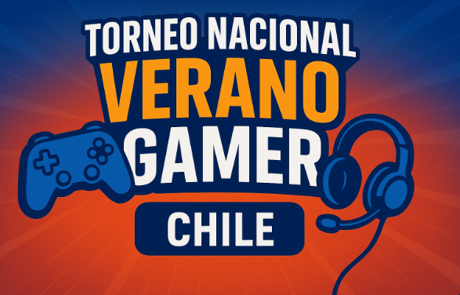

Anunciado el Torneo Nacional de Verano
¡La espera ha terminado! Level-Up Gamer se complace en anunciar el lanzamiento del Torneo Nacional de Verano, el evento de eSports más esperado del año en Chile. Equipos de todo el país tendrán la oportunidad de competir por un pozo de premios increíble y, por supuesto, por la gloria de ser coronados como los mejores.
Juegos en Competición
Este año, el torneo contará con competencias oficiales en tres de los títulos más populares del momento: League of Legends, Valorant y Counter-Strike 2. Las clasificatorias se realizarán de manera online durante el mes de Octubre.
¿Cómo Inscribirse?
Las inscripciones ya están abiertas a través de nuestro portal comunitario. Reúne a tu equipo, elige tu juego y prepárate para demostrar de qué estás hecho. Recuerda que todos los participantes registrados acumularán Puntos LevelUp que podrán canjear por productos exclusivos en nuestra tienda.
¡No te quedes fuera de la acción! Mantente atento a nuestras redes sociales para más anuncios, calendarios y entrevistas con los equipos participantes. ¡Nos vemos en la Grieta del Invocador!
Volver al Blog